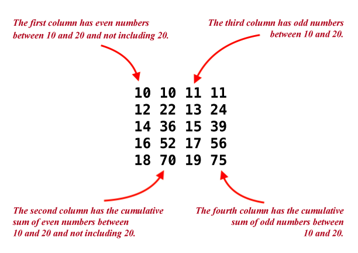
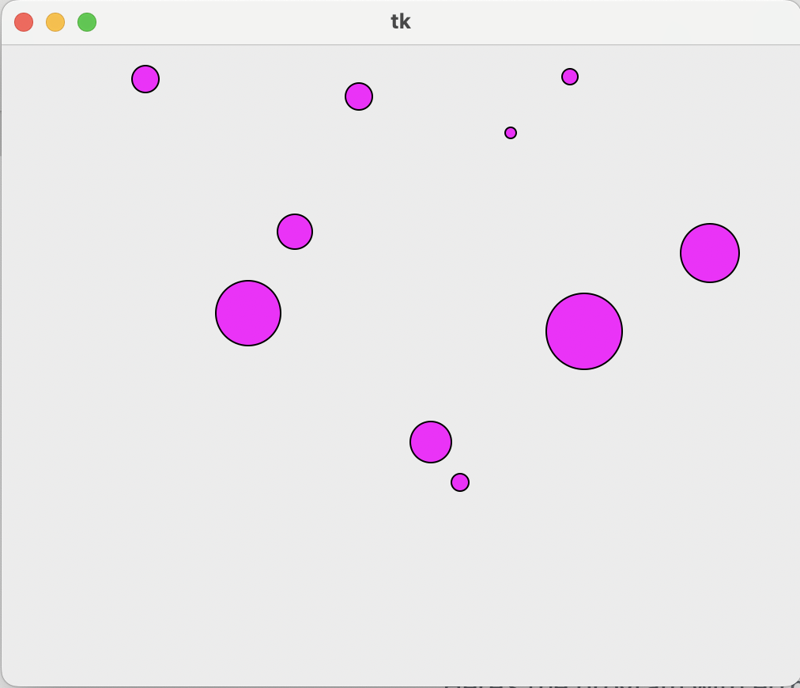
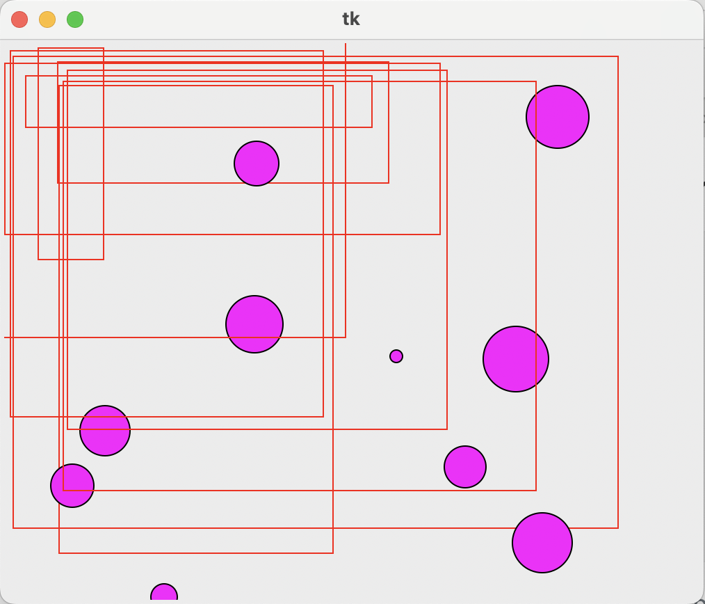

Assignment 1
Do this assignment on your own. You may not consult any other students. You are not allowed to use any online resources to complete this assignment other than the course website. This assignment is to be completed and submitted on Blackboard. All examinations, papers, quizzes and other graded work products and assignments are to be completed in conformance with The George Washington University Code of Academic Integrity. Any violations will be treated as violations of the Code of Academic Integrity.
Objectives
As usual, in each such assignment set, we will help develop your problem-solving skills by showing you how to solve one problem, the first and often hardest problem. However, the solution will include some exercises for you that you will need to submit.
Assignment problems
1. Demo problem.
Consider this coding puzzle. Suppose we’re asked to print out lines in a pattern like this:
z
zy
zyx
zyxw
zyxwv
zyxwvu
zyxwvut
zyxwvuts
zyxwvutsr
zyxwvutsrqAnd suppose we want to use for-loops to achieve this. How do we go about solving this problem?
At this point, do not read further and try to address the following:
- First understand what is being asked.
- Do you see a for-loop or two at work where, as the loops are printing, you’ll get the output shown above?
- Can the problem be broken down into parts, where you can solve the parts and put the solution together afterwards?
- Try writing some code to get at least some of the output.
- What are the issues related to strings?
Don’t forget to submit your solutions to the exercises within the demo problem where you are being asked to examine the solution through the guided exercises presented to you here.
2. Write a program to compute the sum of all odd and even numbers in a given range.
You need to submit the following programs:
2.1 Initialize m = 10 and n = 20 and individually compute the sums of the odd and even numbers within that range in a program called my_oddeven_sum1.py. Use one for-loop.
Your python program should include the following comments
m = 10 n = 20 # Code to add up the even and odd numbers between m and n # using one for-loop # WRITE CODE BELOW THIS COMMENT # WRITE CODE ABOVE THIS COMMENT # When m=10, and n=20, # the sum of even numbers is 70 and # the sum of odd numbers is 75.Your output should look like how it is shown below:
10 10 11 11 12 22 13 24 14 36 15 39 16 52 17 56 18 70 19 75
Now examine the output

- Notice that the first column has even numbers between 10 and 20 and not including 20.
- The second column has the cumulative sum of the even numbers. When m=10, and n=20, the sum of the first two even numbers is 22, that of the first three even numbers is 36, and so on. The sum of all even numbers within the range is 70.
- The third column has odd numbers between 10 and 20.
- Similarly, when m=10, and n=20, the sum of all odd numbers within that range is 75.
2.2 Now create a similar program with m=100 and and n=200 and save it as my_oddeven_sum2.py.
2.3 Finally, create one more program with m=1000 and and n=2000 and save it as my_oddeven_sum3.py.
You will be submitting the following three programs in this assignment exercise:
my_oddeven_sum1.pymy_oddeven_sum2.pymy_oddeven_sum3.py
3. Review the examples in Module 5 where we made random sentences. After pulling out random nouns, a verb, etc., we built sentences using the (incomplete) code below:
import wordtool
# Write some code to invoke functions in wordtool to pick random words.
# See examples in module-5. Find those functions and implement them here.
name = input('Enter your name: ')
# Initialize a variable N for the number of times the for-loop should iterate
# Implement a for-loop here as, for i in range(N):
sentence = (
'Hi ' + name + ', you are a '+ adj + ' ' + noun + ' ' +'that ' + verb + 's' +
' ' + prep + ' a ' + noun2 + '.')
t1 = len(sentence)
t2 = len(adj) You need to fix the above code and submit the following programs:
3.1 Create a program my_avg_SentenceAdj_length1.py that
- asks for your name as a user-input
- implements a for-loop and builds N=10 sentences.
- prints each sentence
- computes the average sentence length and average adjective length and
- prints the two averages at the end.
Below is an example of how the average length of the sentences can be compute with a for-loop.
t1 = t1 + len(sentence)
t1_avg = t1/N
t2 = t2 + len(adj)
t2_avg = t2/NAn example of the expected output is presented below.
Enter your name: Kartik
Hi Kartik, you are a symphonic tumble that forswears minus a rhapsodic.
Hi Kartik, you are a downright guise that retrospects out a earthquake.
Hi Kartik, you are a compensable refugee that twinges fore a depositor.
Hi Kartik, you are a penal downturn that dissipates aboard a tangible.
Hi Kartik, you are a infeasible two that nears of a gardenia.
Hi Kartik, you are a buttery cinch that twinkles amongst a author.
Hi Kartik, you are a murky concomitant that lingers pro a epidermis.
Hi Kartik, you are a rudimentary weird that sheers pro a guess.
Hi Kartik, you are a coronary renown that races but a botfly.
Hi Kartik, you are a paperback song that glorifys to a assurance.
Average length of sentence = 66.7
Average length of adjective = 8.4len(sentence), will count the number of characters including the empty spaces in the sentence.len(adj), will count the number of charactera in the adjective.
3.2 Create a program my_avg_SentenceAdj_length2.pythat has the same requirements as exercise 3.1 but with 100 sentences.
3.3 Create a program my_avg_SentenceAdj_length3.pythat has the same requirements as exercise 3.1 but with 1000 sentences.
You will be submitting the following three programs in this assignment exercise:
my_avg_SentenceAdj_length1.pymy_avg_SentenceAdj_length2.pymy_avg_SentenceAdj_length3.py- Include wordtool.py and wordsWithPOS.txt in your submission
4. Use the sample code provided below and write up a python program my_geometric_art1.py and submit it.
Here’s some code to get started with:
import tkinter as tk
import random as rand
window = tk.Tk()
w = 500
h = 400
canvas = tk.Canvas(master=window, width=w, height=h)
canvas.pack()
# A function that draws a random circle
def draw_random_circle(color):
x = rand.randint(0, w)
y = rand.randint(0, h)
size = rand.randint(0, w/10)
canvas.create_oval(x,y, x+size, y+size, fill=color)
# WRITE YOUR FUNCTION TO DRAW A RANDOM RECTANGLE HERE.
# Name the function, draw_random_rectangle(color)
# draw N circles
#
N = 10
for i in range(N):
draw_random_circle("magenta")
# Standard colors: "black", "red", "green", "blue",
# "cyan", "yellow", "magenta"
window.mainloop()The program will generate an image with 10 circle, filled with magenta color as shown below:

You may refer section 2.3 in module 2 to understand how the program my_geometric_art1.py is executed
4.1 Write a function draw_random_rectangle(color) in the above program and save it as my_geometric_art2.py
draw_random_rectangle(color)should include the following expressions# A function that draws a random rectangle def draw_random_rectangle(color): x = # A random top left x-coordinate of the rectangle y = # A random top left y-coordinate of the rectangle h_dist = # A random horizontal distance of the rectangle v_dist = # A random vertical distance of the rectangle canvas.create_rectangle(x, y, h_dist, v_dist, outline=color)my_geometric_art2.pyshould generate 10 circles filled with magenta color and 10 rectangles with red outline and not filled with any color as shown in the example image below:

You may refer to section 3.6 in module 3 to understand how the function canvas.create_rectangle() draws a rectangle.
4.2 Art project
In my_geometric_art3.py, use the ability to draw rectangles and circles, changing colors where needed, to make a far more impressive work of art.
my_geometric_art3.pyshould output an image with 100 circles filled with cyan color and 100 rectangles, not-filled and outlined in red color
4.3 Art project
In my_geometric_art4.py, use the ability to draw rectangles and circles, changing colors where needed, to make a far more impressive work of art.
my_geometric_art4.pyshould output an image with 1000 circles filled with green color and 100 rectangles, not-filled and outlined in blue color
With a limited color and geometric palette, we’re confident you can make something Mark Rothko or Piet Mondrian would be proud of.
You will be submitting the following four programs in this assignment exercise:
my_geometric_art1.pymy_geometric_art2.pymy_geometric_art3.pymy_geometric_art4.py
5. The following program intends to print the integer value of a letter (character) along with the corresponding letter, separately for uppercase first, and then lowercase. The output (edited for length) is something like:
65-A
66-B
67-C
...
90-Z
97-a
98-b
99-c
...
122-zHere’s the program with errors:
for i in range(65,91):
print(i+ "-" + chr(i)
for j in range(ord('a'),ord('z')):
x = char(j)
print(str(i)+ "-" + x)Find and fix the errors in above program to match the output shown in this exercise. Save the program as fixed_errors1.py and submit it.
You will be submitting the following program in this assignment exercise:
fixed_errors1.py
- Write all your programs in a directory called
assignment1. - After completing the all problems in this assignment, make a
zipof the directory asassignment1.zipand submit it on Blackboard.